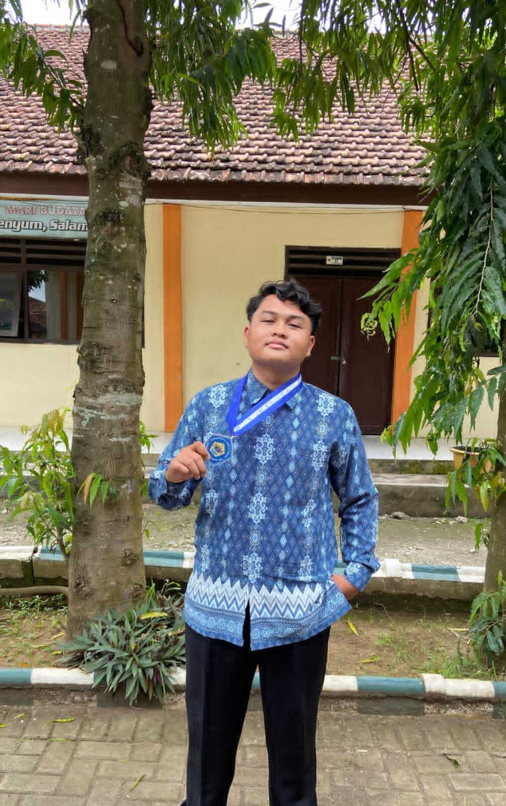

Lulusan SMK Teknik Komputer dan Jaringan dengan pengalaman PKL di perusahaan ternama Surabaya. Siap mengaplikasikan skill networking dan IT support di dunia profesional!

Saya adalah lulusan SMK Negeri 8 Jember jurusan Teknik Komputer dan Jaringan (TKJ) dengan nilai rata-rata 84,22. Memiliki passion di bidang jaringan komputer, hardware, dan technical support. Selama PKL di perusahaan PT Indo Bismar, saya mendapatkan pengalaman langsung menangani jaringan dan support IT skala perusahaan.
Nilai Rata-rata
Sertifikat
Praktikum
Pengalaman PKL
Perusahaan perdagangan (grosir dan ritel), serta penyedia layanan di sektor teknologi.
Mendapat apresiasi dari atasan karena berhasil menyelesaikan perbaikan perangkat keras milik costumer dan menjual produk dari PT tersebut
"Christian adalah anak magang yang cepat belajar dan memiliki dedikasi tinggi. Ia mampu menangani masalah teknis dengan baik dan selalu proaktif membantu tim."
Mampu bekerja sama dalam tim dengan baik
Komunikasi yang jelas dan efektif
Tepat waktu dan bertanggung jawab
Analitis dalam menyelesaikan masalah
Cepat mempelajari teknologi baru
Ramah dan melayani dengan baik
Network Device Installation and Configuration
CertifiedSertifikasi Kompetensi Teknik Jaringan Komputer
CertifiedTes Kemampuan Akademik
CertifiedPT. Indo Bismar
CertifiedPelatihan Keamanan Siber - ID-Networkers
In ProgressPelatihan Google Cloud - Dicoding
In ProgressSaya sedang mencari peluang kerja sebagai Network Engineer, IT Support, atau Teknisi Jaringan. Siap untuk segera bekerja dan memberikan kontribusi terbaik!
christiandenisaputra01@gmail.com
+62 812 5228 5123
@chrzz_ox